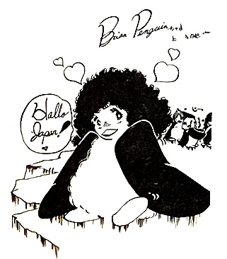

Apart from a detailed itinerary of the Japanese tour, this issue also contains performance reports and the staff's impressions of each member, unseen pictures, and the usual fanclub correspondence and merchandise pages. The fanclub had grown to thousands of members by this point, attracting the attention of Nabepro.
I consider Volume 4 to be the crowning jewel of the Queen Times, detailing a historic tour by the band before they were a household name. The amount of interaction the young staff of the club were able to have with band members is truly remarkable, and the excitement of the occasion is palpable.
The cover illustration was drawn by future mangaka Yayoi Takeda.
Queen on the Road
Impressions of Queen
Japanese Performance Highlights
Note from the Editor